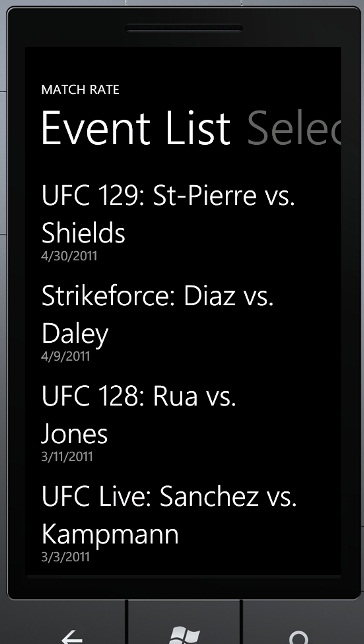
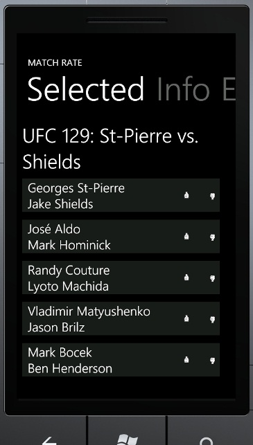

Web page shows all data ofn latest event and only names of the rest of the events. Clicking event's name, will get event's data with ajax.
Windows Phone version shows all events in list and clicking event's name will switch to next view where event info is shown.
PHP Web Site sends data to clients in JSON.
Web page creates controls dynamically from JSON.
Data is stored in MySQL database.
Web site has checks that check request is made by human. (Should add CAPTCHA check)

Windows Phone application
Windows Phone application creates Domail Models from JSON data (Web requests run on separate threads).
Domain Models are converted to ViewModels. View Models use Commands, although Windows Phone doesn't support yet Command bindings.
For now commands are binded to Tags and are executed from code-behind (I read from internet that MVVM Police won't take my family away, so it's ok like that).
GetEvents
- Get all events
SELECT * FROM Event
- Create JSON
GetEvent(eventID, ip)
- Validate inputs
- Get all matches for event (let DB do all the work)
SELECT ID as EventID, Name, Date, fight.FightID, Fighter1_ID, Fighter1_Name, Fighter1_Url, Fighter2_ID, Fighter2_Name, Fighter2_Url, COALESCE(Up,0) as Up, COALESCE(Down,0) as Down, COALESCE(ipRate.Rate, -1) AS IpRate FROM Event
LEFT JOIN
(SELECT ID AS FightID, EventID,Fighter_1_ID,Fighter_2_ID FROM Fight) fight
ON Event.ID = fight.EventID
LEFT JOIN
(SELECT ID as Fighter1_ID, Name as Fighter1_Name, Url as Fighter1_Url FROM Fighter) f1
ON Fighter_1_ID = f1.Fighter1_ID
LEFT JOIN
(SELECT ID as Fighter2_ID, Name as Fighter2_Name, Url as Fighter2_Url FROM Fighter) f2
ON Fighter_2_ID = f2.Fighter2_ID
LEFT JOIN
(SELECT rate1.FightID, Up, Down FROM
(SELECT Rating.*, COUNT(*) AS Up FROM Rating
LEFT JOIN Fight ON Rating.FightID = Fight.ID
WHERE Fight.EventID = @eventID AND Rating.Rate = 1
GROUP BY Rating.FightID) rate1
LEFT JOIN
(SELECT Rating.*, COUNT(*) AS Down FROM Rating
LEFT JOIN Fight ON Rating.FightID = Fight.ID
WHERE Fight.EventID = @eventID AND Rating.Rate = 0
GROUP BY Rating.FightID) rate2
ON rate2.FightID = rate1.FightID
UNION
SELECT rate2.FightID, Up, Down FROM
(SELECT Rating.*, COUNT(*) AS Up FROM Rating
LEFT JOIN Fight ON Rating.FightID = Fight.ID
WHERE Fight.EventID = @eventID AND Rating.Rate = 1
GROUP BY Rating.FightID) rate1
RIGHT JOIN
(SELECT Rating.*, COUNT(*) AS Down FROM Rating
LEFT JOIN Fight ON Rating.FightID = Fight.ID
WHERE Fight.EventID = @eventID AND Rating.Rate = 0
GROUP BY Rating.FightID) rate2
ON rate2.FightID = rate1.FightID) r1
ON r1.FightID = fight.FightID
LEFT JOIN
(SELECT FightID, Rate FROM Rating WHERE IP = '@ip') ipRate
ON ipRate.FightID = fight.FightID
WHERE EventID = @eventID
- Create json
Vote(fightID, ip, rateValue)
- Validate inputs
- Check that fight haven't been voted by ip
- Check that ip is not voting too frequently
// TODO: Some other checks
- Enter rating to db
INSERT INTO Rating VALUES (@ip, @fightID, @rateBit, @time)